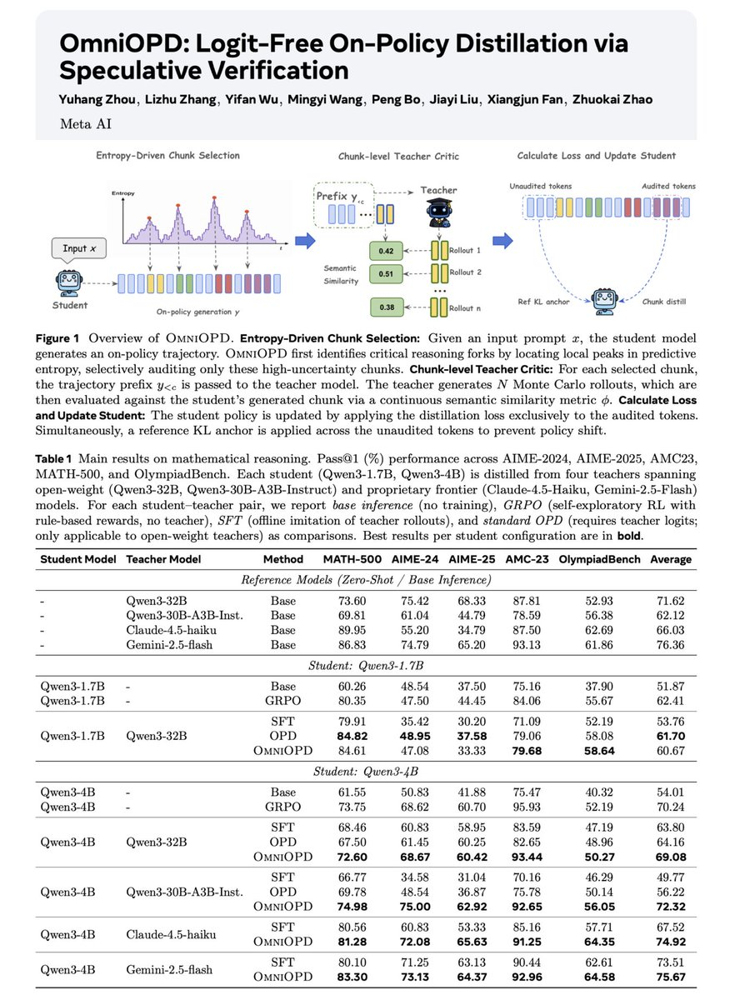

核心判断
这篇工作的真正 insight 是：标准 OPD 的问题未必是 teacher 信号不够强，而是通信协议太脆弱。Token logits 的信息密度很高，但它同时携带 tokenizer、格式、措辞、局部重复和风格偏好。OmniOPD 降低监督带宽，用多 token chunk 的语义相似度换取更稳定的 teacher-student 通信。
不是 SFT
SFT 让学生模仿 teacher 已写好的完整轨迹。OmniOPD 让学生先暴露自己的 on-policy trajectory，再让 teacher 只在关键分叉处给局部验证信号。
不是白盒 OPD
标准 OPD 依赖 teacher next-token logits。OmniOPD 只需要 teacher 从学生 prefix 继续生成若干 rollout，因此能接入只返回文本的 Claude、Gemini、GPT 类模型。
不是过程奖励模型
它没有训练单独 PRM，也不判断每一步推理是否严格正确。teacher 信号通过 chunk 与 rollout 的语义相似度进入 loss，是一种弱过程验证。

OPD 的痛点：强 teacher 不等于好 token 监督
On-Policy Distillation 的目标很诱人：学生在自己的分布上生成轨迹，teacher 对这些轨迹给 dense feedback。相比 SFT，它避免只学 teacher 离线轨迹导致的 exposure bias；相比 outcome-only RL，它又有更密集的局部训练信号。
问题在于，标准 OPD 往往把 teacher 的 per-token probability 当成监督对象。这个假设在推理模型后训练里很脆弱，因为有效信号常常只集中在少量 plausible next tokens 的重叠集合里。只要 teacher 和 student 的中间推理路径、措辞风格或 tokenizer 不一致，token-level reverse KL 就会把表面差异当成训练压力。
Access barrier
很多 frontier proprietary models 只返回文本，不返回完整 logits。标准 OPD 因此很难直接用 Claude、Gemini、GPT 这类 teacher。
Brittleness barrier
即使拿得到 logits，teacher 对学生当前 prefix 的局部 token 概率也未必可靠。学生一旦进入不同推理风格、重复 loop 或低质量 prefix，teacher 的局部概率可能从纠错信号变成误导信号。
OmniOPD 机制拆解
整套方法可以理解为一个五段式 pipeline：学生生成、熵峰定位、teacher rollout、语义打分、带 KL anchor 的 chunk loss。
1. 学生先生成
对输入 \(x\)，学生策略 \(\pi_\theta\) 先采样自己的 reasoning trajectory \(y\)。这是 on-policy 的关键。
2. 找高熵分叉
在每个 token 位置计算预测熵，选出 \(M\) 个最高熵 anchor，再形成长度为 \(C\) 的 non-overlapping chunks。
3. teacher 续写
对每个 chunk 的前缀 \(y_{<c}\)，黑盒 teacher 生成 \(N\) 条 Monte Carlo rollouts。
4. 语义相似度
用 \(\phi(y_c, y_{teacher}^{(i)})\) 比较学生 chunk 和 teacher rollout，得到 chunk-level evidence。
5. 稳定更新
用 Bayesian smoothing 避免零匹配无梯度，再用 reference KL anchor 约束未审计 token 的漂移。
Chunk-level teacher evidence
对一个被审计的 chunk \(c\)，teacher 产生 \(N\) 条 rollout。OmniOPD 不要求 teacher 和 student token 对齐，只把 teacher 信息压缩为相似度和：
这里 \(\phi\) 可以是 Edit Distance、ROUGE-1、embedding similarity 或更强的 verifier。论文默认使用 normalized Edit Distance，也系统比较了 ROUGE-1 等指标。
Bayesian smoothing
有限 rollout 会带来高方差。如果 teacher 的 \(N\) 条输出都和学生 chunk 不匹配，直接用 frequentist estimate 会让该 chunk 没有可用梯度。OmniOPD 用学生当前 chunk probability 的几何均值作为 prior：
然后构造 Bayesian target proxy：
这个设计的工程意义很直接：teacher 完全不同意时，训练不会在最需要纠错的 chunk 上静默失效；teacher rollout 噪声很大时，prior 又能降低 target multiplier 的方差。
Trust-region anchor
因为只审计 \(M\) 个 chunk，轨迹中大部分 token 都没有 teacher supervision。论文用 frozen base/reference policy \(\pi_{ref}\) 对 unaudited tokens 加 KL 约束，防止学生在监督空白区产生不受控漂移：
实验结果：数学推理强，代码任务不算碾压
论文在数学推理上训练 Qwen3-1.7B 和 Qwen3-4B student，teacher 覆盖 Qwen3-32B、Qwen3-30B-A3B-Instruct、Claude-4.5-Haiku、Gemini-2.5-Flash。评价集包括 MATH-500、AIME-2024、AIME-2025、AMC23、OlympiadBench，指标为 Pass@1。
| Student / Teacher | Baseline | SFT | OPD | OmniOPD | 我的读法 |
|---|---|---|---|---|---|
| Qwen3-1.7B / Qwen3-32B | Base 51.87 / GRPO 62.41 | 53.76 | 61.70 | 60.67 | 小 student + open teacher 时，OmniOPD 没赢 GRPO，也略低于白盒 OPD；能力差和语义 metric 可能限制了收益。 |
| Qwen3-4B / Qwen3-32B | Base 54.01 / GRPO 70.24 | 63.80 | 64.16 | 69.08 | 比 SFT 和 OPD 明显强，但仍略低于同一 student 的 GRPO。 |
| Qwen3-4B / Qwen3-30B-A3B-Instruct | teacher base 62.12 | 49.77 | 56.22 | 72.32 | 这是最能支持论文论点的一组：teacher 风格差异越大，token-level OPD 越吃亏，chunk semantic signal 越占优。 |
| Qwen3-4B / Claude-4.5-Haiku | teacher base 66.03 | 67.52 | 不适用 | 74.92 | 黑盒 teacher 场景是真正卖点：不需要 logits 仍能超过 SFT 和 GRPO。 |
| Qwen3-4B / Gemini-2.5-Flash | teacher base 76.36 | 73.51 | 不适用 | 75.67 | 收益小于 Claude teacher，但仍高于 SFT 和 GRPO。 |
代码任务的反证价值
竞争编程上，OmniOPD 的结论更克制：Qwen3-1.7B 上平均 47.93，高于 OPD 47.06；Qwen3-4B 上平均 63.78，低于 OPD 65.26。这个结果反而重要，因为它说明 chunk-level invariance 不是免费午餐。代码的 token 精确性、语法局部性和格式约束更强，token-level matching 本身就包含有效监督；数学自然语言推理里，多种表述可语义等价，chunk semantic verification 才更容易发挥优势。
消融结果说明哪个部件最关键
| Variant | Average | 结论 |
|---|---|---|
| Full OmniOPD | 69.08 | 默认配置为 \(M=10, N=10, C=50, \beta=0.1\)。 |
| w/o Entropy Selection | 68.45 | 高熵选择有帮助，但不是唯一支柱；随机或均匀 chunk 也不是完全失效。 |
| w/o Bayesian Smoothing | 68.63 | Bayesian smoothing 提升有限但稳定，主要价值是降低 sparse rollout 的估计风险。 |
| w/o KL Anchoring | 8.28 | 这是最硬的证据：稀疏 chunk supervision 如果没有 unaudited-token trust region，会直接 policy collapse。 |
成本：不是免费，但有可调 effort-accuracy frontier
OmniOPD 的成本主要来自 teacher inference。论文把成本拆成 prefill 和 decode：teacher 需要读入学生已有 prefix，然后只在被审计 chunk 上生成短 rollout。因为 transformer prefill 通常比 decode 更可并行，论文用代表性的 decode-to-prefill 成本比来估算相对 SFT 的 teacher effort。
这个成本叙事需要按真实系统重新核算。自托管 teacher 时，prefill/decode 吞吐、batching、KV cache、并发都会影响成本；API teacher 时，N 条 rollout 的 latency、rate limit 和计费方式可能比 token-equivalent 更关键。
工程启发：先把监督粒度做成可替换接口
如果要复现这条路线，最不该直接照抄的是默认 Edit Distance；最该复用的是模块边界。把 chunk selector、teacher rollout collector、semantic scorer、Bayesian estimator、KL anchor 做成可替换接口，才有机会判断收益来自哪里。
先从数学任务闭环
用已有 RLVR 数学数据，让 student 生成 trajectories，记录 entropy，先复现 \(M=5/10\)、\(C=50/100\)、\(N=10\) 的最小 ablation。不要从代码任务开始。
重点比较 \(\phi\)
Edit Distance 和 ROUGE-1 都偏 lexical。工程上应比较 lexical metric、embedding similarity、LLM-as-judge、domain verifier 四类 scorer，否则很难知道模型是在学语义还是学话术。
KL anchor 不能省
消融里去掉 KL anchor 后直接坍到 8.28。只审计局部 chunk 时，未审计 token 是系统性风险源，不是实现细节。
监控不只看最终分
训练时要同时看 response length、entropy、KL、teacher query budget、zero-match chunks、semantic score 分布、重复率和 unaudited token drift。
边界与风险
OmniOPD 的方向很有价值，但它还不是通用后训练答案。它最适合的区域是：答案可评估、推理 chunk 有多种等价表达、teacher 能给出高质量 continuation、学生和 teacher 风格/tokenizer 有明显差异的任务。
\(\phi\) 不是真语义
论文默认 Edit Distance，ROUGE-1 也只是词面重叠。学生 chunk 和 teacher rollout 文本像，不等于逻辑正确；文本不像，也不等于错误。
高熵不等于高价值
高熵常对应公式选择、case split、约束检查，但也可能只是措辞或格式摇摆。低熵也可能是模型非常自信地走错。
Bayesian prior 有两面性
prior 防止 zero-match 无梯度，但也会把学生原本的偏好带回目标里。论文里 \(\alpha\) 过大性能会明显下降，说明它是敏感超参。
代码任务证据不支持泛化
4B 代码实验里 OmniOPD 低于 OPD。对语法刚性强的任务，token-level signal 可能确实更有效。
黑盒 teacher 成本要重算
API teacher 的并发、延迟、rate limit、价格、输出长度控制，都可能改变论文中的 effort frontier。
没有复现实验
本文是材料解读，不是实验复现。实验数字按论文报告理解，尚未验证代码、数据划分和实现细节。
关键术语对齐
On-Policy Distillation
学生在自己的当前策略分布上生成样本，然后 teacher 对这些学生样本给监督。重点是训练分布跟推理时学生会访问的分布一致。
Reverse KL
常见 OPD 目标之一，让学生分布贴近 teacher 分布。它在 teacher 对学生采样 token 给极低概率时可能产生极端梯度。
Peak-Entropy Scheduler
用学生自身预测分布的熵定位高不确定性位置，优先把有限 teacher query budget 花在推理分叉处。
Dirichlet-Multinomial Prior
一种对稀疏 Monte Carlo 估计做平滑的贝叶斯先验。这里用学生自己的 chunk confidence 做 fallback，避免零匹配时监督消失。
Reference KL Anchor
让当前策略在未审计 token 上靠近 frozen base/reference policy，限制局部监督带来的全局漂移。
Chunk-level Semantic Verification
不比较单个 token，而比较一段学生生成和 teacher continuation 在语义或词面上的接近程度。它牺牲精度，换取 tokenizer 和风格上的鲁棒性。
证据边界与资料索引
本文基于 Zhuokai Zhao 关于 OmniOPD 的 X 原帖、其前序 OPD 脆弱性长帖、论文 OmniOPD: Logit-Free On-Policy Distillation via Speculative Verification 的 arXiv 摘要页、HTML 正文、PDF 和配图结果表。本文没有复现训练，也没有确认官方代码仓库，因此对实验数字只做机制性解读。
一手材料
- Zhuokai Zhao 关于 OmniOPD 的 X 原帖
- Zhuokai Zhao 关于 OPD 脆弱性的前序长帖
- arXiv:2606.01476 摘要页
- OmniOPD 论文 PDF
- arXiv HTML 版本
X threadarXiv PDFOPDPost-training
核验边界
原帖引用的论文对应 arXiv `2606.01476`。论文摘要页显示提交日期为 2026-05-31，作者包括 Yuhang Zhou、Lizhu Zhang、Yifan Wu、Mingyi Wang、Peng Bo、Jiayi Liu、Xiangjun Fan、Zhuokai Zhao。实验数字来自论文表格与 X 配图；本文未做独立复现。
深度解读：把 OmniOPD 放回 2026 后训练路线图
本节在笔记机制和实验之上做一次再综合：回答三个问题——这篇工作的真正分量在哪里、它与当下 post-training 趋势的位置关系、以及哪些点最值得在工程里优先复现验证。
1. 真正解决的问题：协议层替换，不是工程优化
Zhuokai Zhao 在推文和前序长帖里反复强调的不是"我们做了个不用 logits 的 OPD"，而是承认 token-level reverse KL 在 reasoning 后训练里已经出问题。OmniOPD 的叙事重心是：OPD 协议本身（teacher 给每 token 一个概率）需要被替换，不是修补。
这个观察不是孤立的。2025 下半年开始，社区对 OPD/SFT-after-RL 路线的怀疑明显变多：SFT 强 teacher 轨迹之后 student 反而掉分（Qwen3-1.7B / Qwen3-32B 这行论文自己就复现了）、GRPO 类 outcome-only RL 在数学上更稳定、专有模型只返回文本根本进不了白盒 OPD 的训练 loop。OmniOPD 在这条怀疑链上给了一个具体可落地的替代协议。
2. 四个非平凡设计
机制节已经按 pipeline 拆过五步。这里再聚焦四个真正非平凡的设计点，说明它们各自在解决什么具体困境。
Peak-entropy scheduler ≠ 普通截断
先排成 chunk（连续 C 个 token），再在 chunk 粒度上做语义打分。token 粒度不可避免引入 tokenizer mismatch；chunk 粒度把 teacher 的多条 rollout 视为完整子序列，smoothing 掉单 token 局部偏好，留下"这条推理路线是否在语义上接近 teacher 会怎么走"。这是 teacher signal enters as a bounded chunk multiplier rather than a denominator 的具体来源。
Bayesian smoothing 的两难
prior 用学生自己的 chunk probability 当 fallback，解决 zero-match 无梯度的监督真空。但 α 太小救不回死掉的 chunk，α 太大会把 teacher 的纠错信号稀释回学生偏好。任何想落地的团队，第一件该做的 ablation 是 α-sweep，而不是直接套默认 α。
KL anchor 是最强的消融证据
消融里去掉 KL anchor 直接坍到 8.28。这给所有"半监督 + 高不确定性采样"路线定了一个硬下限：稀疏 chunk 监督必须配 trust region，不是"训得慢"而是"训崩了"。这条比 28.64% 的相对提升更值得在评审/分享里讲。
Loss 的 invariance 性质是黑盒蒸馏的根
论文证明 chunk-level loss 对 teacher tokenizer / writing style 不变。没有这个性质，Claude-4.5-Haiku 蒸馏 Qwen3-4B 这条路在风格差异下不可能涨到 74.92%。它是 OmniOPD 敢标榜"black-box teacher 也行"的理论地基，不是营销话术。
3. 实验矩阵里容易被忽略的三个信号
Qwen3-4B / 30B-A3B-Instruct 这行
SFT 49.77 / OPD 56.22 / OmniOPD 72.32。当 teacher 风格和 student 差异巨大时，token-level OPD 几乎就是负收益。OmniOPD 在这里展示的不是"略胜一筹"，而是"在 OPD 已经失败的地方还能涨 16 个点"。这是论文最硬的单点证据。
Qwen3-4B / Qwen3-32B: 69.08 vs GRPO 70.24
OmniOPD 没打过同一 student 的 GRPO。作者没回避这个数字，反而写在推文里。说明 OmniOPD 的卖点不是"全场景碾压"，而是"在 OPD 能用的场景里它不输、在 OPD 不能用的场景里它独赢"。GRPO 和 OmniOPD 是互补关系不是替代关系。
代码任务交叉结果
1.7B 赢 OPD 0.87 / 4B 输 OPD 1.48。作者直接承认"code is rigid enough that matching the teacher token by token already carries real information"。OmniOPD 的优势域是"语义等价路径多"的推理任务，不是所有任务。这条边界比"我们 SOTA 了"重要。
4. 在 2026 post-training 趋势里的位置
把 OmniOPD 放回更大的路线图里，有三个 contextual 解读值得记下：
与 Long-CoT / Agentic RL 的张力
Long-CoT 训练（OpenR1、DeepSeek-R1 类）已经证明"长 reasoning trace + outcome reward"就能涨点。OmniOPD 的工程价值不是替代 RL，而是在 RL 信号之外，再加一层轻量 teacher critic，在 RL 已经涨不动的时候提供新的监督带宽。
让"用 Claude 蒸馏 Qwen"在协议层合法
之前这条路主要靠 SFT（拷 teacher 离线轨迹）+ GRPO 救回来。OmniOPD 给了"on-policy + 黑盒 teacher"一条单独可行的路，省一轮 RL 训练。对算力紧的团队这是直接的经济账。
把 semantic verification 和 PRM 分开
之前 PRM 路线需要单独训一个过程奖励模型。OmniOPD 证明 teacher 自己就能当 critic，只要 chunk 粒度对、semantic metric 对。对自研团队，这意味着不必再维护一套 PRM 训练 pipeline，teacher 本身就是 verifier。
5. 三个最容易误读的点
"28.64% 相对提升"的 baseline 锚定
这是在 Qwen3-4B / Qwen3-30B-A3B-Instruct 这种 OPD 已经被打到 50 分的场景下，靠 OmniOPD 拉回到 72 分。这个提升里有多少来自"OPD 失败被纠正"、多少来自"OmniOPD 本身更强"，需要 control 一下 GRPO baseline 才能拆清楚。不要把这个数字当成通用提升。
Edit Distance 不是"语义 metric"
论文默认用 normalized Edit Distance，ROUGE-1 也只是词面重叠。学生 chunk 和 teacher rollout 文本像 ≠ 逻辑正确；文本不像 ≠ 错误。落地第一步就该把 φ 换成 embedding similarity / LLM-judge / 领域 verifier 试一遍。
高熵 ≠ 高价值
高熵常对应公式选择、case split、约束检查，但也可能只是措辞或格式摇摆。低熵也可能是模型非常自信地走错。Peak-entropy scheduler 不是 oracle，它只是把 teacher query budget 集中到不确定性高的位置，不确定性高不等于学习价值高。
6. 复现优先级排序
如果要复现这条路线，按这个顺序最小化风险：
Step 1
先做 KL anchor 消融。最便宜，能立刻验证 trust region 的必要性。
Step 2
扫 α（Bayesian smoothing 强度）。决定 zero-match chunk 的存活率。
Step 3
换 φ（Edit Distance → embedding similarity → LLM-judge）。决定模型在学语义还是学话术。
Step 4
调 (M, N, C)。M=audit budget, N=rollout count, C=chunk size。这三个超参耦合，单独改一个容易跑出虚假结论。
Step 5
接入黑盒 API teacher（Claude / Gemini）。需要重算 API 成本里的 prefill/decode 比、rate limit 和并发。